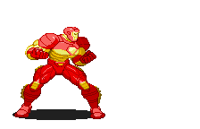

De qualquer
maneira, ao voltar para os Estados Unidos, Stark aperfeiçou a armadura e começou uma
cruzada contra inimigos dos Estados Unidos, criminosos em geral e qualquer um que tentasse
usar com propósitos excusos a tecnologia que criou. O Homem de Ferro foi um dos membros
fundadores dos Vingadores e Tony Stark age como o principal patrocinador financeiro do grupo.
